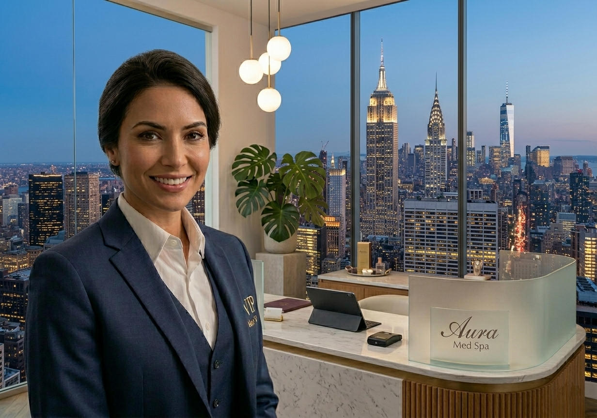

Confidential Briefing
Slide 1 / 24
Chapter 01 — The Opportunity
MassaPro IVR
Face-to-Face Service Over Video
Face-to-face service over video, without staff at the service point
One expert team serves the entire physical and digital network